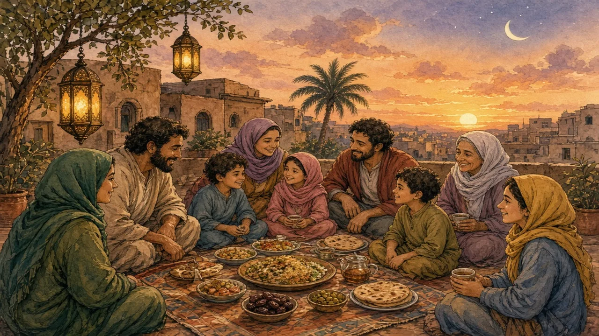

A month of fasting, family, charity and long nights — and for many people, one of the happiest times of the year.
Middle East and North Africa · Faith & community · Lesson 5 of 7
🌍 World map · ← Around the World: Middle East and North Africa · 🌱 Easier version (A2) · ← Women in the Middle East and North Africa: Beyond One Picture · Haggling in the Souk: A Friendly Art, Not a Trap →

Each new word is hidden in a sentence. Read it aloud and say what you think the bold word means from the rest of the sentence — then reveal it and see how close you were.
Read each part. After it, there's a quick comprehension check (try the questions from memory first), then one thing to discuss.
Ramadan is the ninth month of the Islamic lunar calendar. Because the lunar year is shorter than the solar year, it starts about ten or eleven days earlier each year, and moves through every season. Muslims who are able to do so do not eat or drink anything between dawn and sunset. The fast is not required for young children, the sick, pregnant women or travellers. Before dawn, families eat a meal called suhoor, and at sunset, they break the fast with dates and water.
1. Why does Ramadan move through the seasons?
2. Who is exempt from fasting?
1. The lunar year is shorter than the solar year.
2. Young children, the sick, pregnant women and travellers.
After the evening meal, called iftar, the streets come alive. People pray, visit relatives, shop and drink tea until late. In Egypt, colourful lanterns called fawanees decorate the streets, and television networks produce series that families watch together. Many people give to charity: meals are offered free to anyone who needs them. As soon as the sun sets, a whole community sits down at once, and while the meal is shared, the usual differences of rich and poor are less visible.
1. What happens after iftar?
2. What do many people do for charity?
1. People pray, visit, shop and drink tea until late.
2. Offer free meals to anyone who needs them.
People still go to work, though in many countries working hours are shorter and offices are quieter in the afternoon. Some people feel tired and some find it difficult, and the experience is different from a person to a person. Non-Muslims are not expected to fast, but they are often asked to be discreet about eating in public until sunset in places where most people are fasting. When the new moon appears, the month ends with Eid al-Fitr, a festival with new clothes, sweets, gifts and family visits.
1. Do people still work during Ramadan?
2. What ends the month?
1. Yes, but often on shorter hours.
2. The festival of Eid al-Fitr.
A stereotype and the reality rarely match. This lesson's grammar gives you the structure to describe the difference.
Complete each sentence about this topic.
1. dawn, families eat a meal called suhoor. (Before / Until)
2. They do not eat or drink the sun sets. (until / while)
3. the sun sets, everyone sits down to eat. (As soon as / Before)
1. Before
2. until
3. As soon as
1. they eat, they talk and laugh together. (While / Until)
2. The streets become busy the meal is over. (after / until)
3. Children stay up it is very late. (until / before)
1. While
2. after
3. until
Hold on to this — you'll need it in the Speak tab.
Outsiders often picture Ramadan from the outside, as hunger, and miss the inside: the purpose of the fast, which is self-discipline, patience and sympathy with people who are hungry, and the way it brings a community together. Of course, individual experiences differ, and some people find it very hard or do not take part. But describing a month of celebration, generosity and family only as “suffering” is like describing a winter holiday only as “cold”.
This is the heart of the lesson — do all of it out loud. The timer is there to keep you going: fill the time with detail rather than escaping it.
Explain what Ramadan is really like and where the stereotype goes wrong, as if to a friend who knows only that “Muslims fast”. Move through the arc: the fast → nights full of life → work, difference and Eid.
Use today's grammar at least three times, and work in at least five key words (fast, dawn, sunset, charity, lantern, gathering, exempt, festival).
“Workplaces should adapt their routines during religious periods.” Discuss.
Tell a story from your own world — work, family, the news — that connects to this topic. Stuck for an idea? Pick one of these and run with it:
🌍 World map · ← Around the World: Middle East and North Africa · 🌱 Easier version (A2) · ← Women in the Middle East and North Africa: Beyond One Picture · Haggling in the Souk: A Friendly Art, Not a Trap →